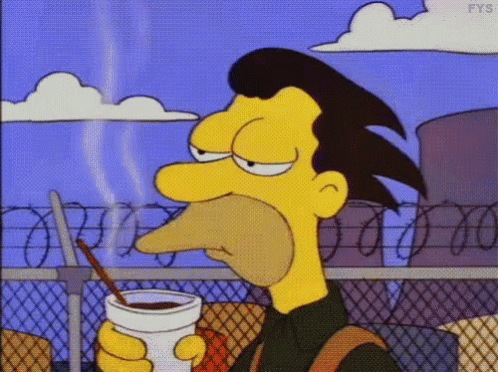

<!DOCTYPE html>
<html lang="en">
  <head>
    <meta charset="UTF-8" />
    <meta http-equiv="X-UA-Compatible" content="IE=edge" />
    <meta name="viewport" content="width=device-width, initial-scale=1.0" />
    <title>Document</title>
    <link rel="stylesheet" href="./style.css" />
  </head>
  <body>
    <!--  -->
    <!-- <form class="form">
      <label class="label">Nombre</label>
      <div class="container-input">
        <input class="input" type="text" name="nombre" />
      </div>
    </form> -->

    <!-- HAY QUE SEGUIR CON ESTO HASTA QUE SAAAAAAALGAAAAAAAAA... ARREGLEYA EL ACCES ROOM... AHORA LO QUE FALTA ES TERMINAR DE MANIPULAR EL HEADER Y EMPEZAR HACER FUNCIONA EL START VALUE DE LOS USUARIOS EN SU INTERFACE ASI PASO A LA PROXIMA PAGE QUE YA ES SELECCIONAR JUGADA CREO !! VAMOS QUE SE PUEDE PAPAAAAAA:D -->
    <!-- VOY A TENER QUE QUITAR EL HEADER COMP Y AGREGARSELO A LAS PAGES YA QUE NO ME ESTA FUNCIONANDPO DEL TODO BIEN -->

    <!-- AHORA LO PROXIMO ES SEGUIR CON EL PLAY SELECT -->

    <!-- PROXIMO A SEGUIR - CREAR UN USER2HANDS COMO EL HANDS1 PERO QUE MANIPULE Y ENVIE LOS MOVIMIENTOS DEL USUARIO 2 A LA RTDB Y LUEGO CREAR UN  HANDS BATALLA QUE TRAIGA LOS DATOS DE LOS MOVIMIENTOS RTDB DEL USUARIO 1 Y 2  Y LOS ENFRENTE PARA SABER LUEGO QUIEN GANA -->

    <!--  PROXIMO A SEGUIR CREAR BIEN LA LOSE-PAGE Y WIN-PAGE PARA VINCULARLA Y DESPUES AÑADIR CSS Y LOS DETALLES A TODAS LAS PAGES-- TAMBINE MANIPULAR EL HEADER PARA QUE MUESTRE BIEBN TODO LO QUE TIENE QUE MOSTRAR -->
    <div class="root"></div>
    <script type="module" src="./index.ts"></script>
  </body>
</html>
